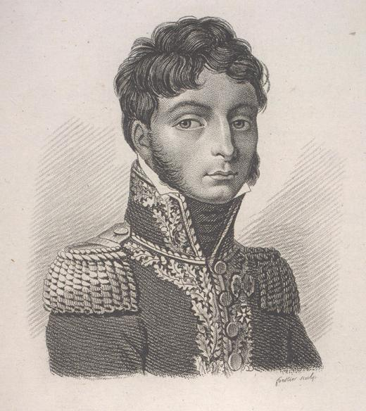
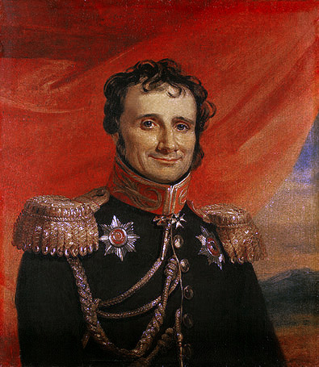
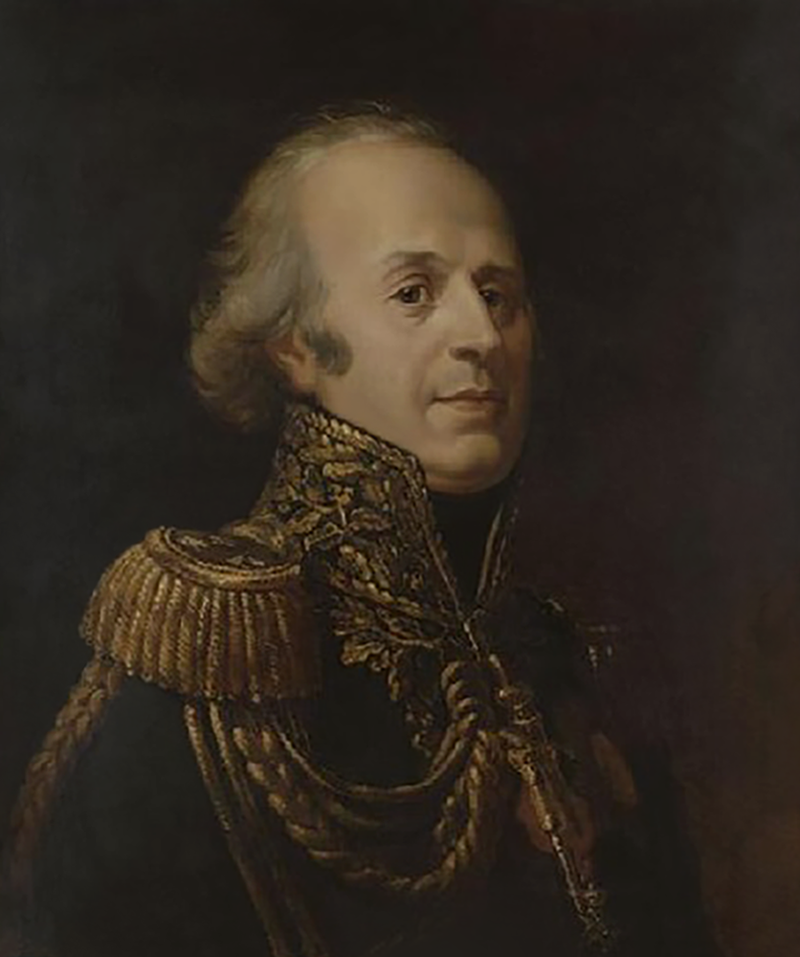

멈추지 못한 발걸음 (1) - 1812, 시즌 오버?
게시: 2020-02-10T06:30:25+09:00
바이에른군의 에라스무스 드로이(Erasmus Deroy) 장군이 본국에 보낸 보고서에 따르면 이미 병사들의 군화는 물론 군복 코트, 바지, 각반 등이 모두 누더기가 되어 있었습니다. 당시 군대가 요즘에 비해 지나치게 화려한 군복을 고집했던 것이 다 이유가 있었습니다. 사람은 입는 옷에 따라 거동이 달라지는 동물이라서, 절도 있는 군복을 말끔하게 차려입으면 그만큼 더 군기있게 행동하는 경향이 있습니다. 그렇지 못한 복장을 입고 있으면 반대로 군기가 바닥에 떨어지는 문제가 있지요. 상황이 딱 그랬습니다. 드로이 장군도 병사들의 사기가 바닥일 뿐만 아니라 불만과 명령 불복종이 위험 수준에 달했다며 보고서에서 개탄했습니다. 게다가 뷔르템베르크 출신 칼 폰 수코프(Carl von Suckow)의 기록에 따르면 이때 즈음 해서는 하룻밤에도 몇 번씩 총성이 울리곤 했습니다. 자살이었지요. 그의 기록에 따르면 수백 명씩 자살을 했고, 심지어 장교까지 자살을 하기도 했습니다. 이렇게 그랑다르메는 보급 부족과 질병 등으로 인해서 비전투 손실이 막심했고, 그에 따른 사기 저하는 말할 것도 없었습니다. 분명히 비텝스크 전투는, 비록 전투라고 부르기에도 부끄러운 수준의 충돌에 불과했지만, 분명히 프랑스군의 승리였습니다. 그럼에도 이때의 상황은 1812년 당시 나폴레옹의 참모진에서 일했던 세귀르(Philippe Paul, comte de Ségur) 장군의 기록에 따르면 다음과 같았습니다. "(비텝스크에서의) 우리의 승리보다 러시아군의 패배가 더 질서정연했다."

(세귀르 백작 필립 폴입니다. 그는 1812년 당시 32세의 젊은 장군이었는데, 원래 귀족 집안 출신으로 나폴레옹 집권 이후인 1800년에 군문에 투신한 사람이었습니다. 그는 나폴레옹의 심복인 뒤록(Duroc)과 연줄이 닿아 그의 추천으로 나폴레옹의 참모진에서 오래 일했고, 1807년 폴란드 원정에서는 러시아군의 포로가 되기도 하고 스페인에서 부상을 당하는 등 실전에도 여러번 참전했습니다. 그는 백일천하 때 나폴레옹 편에 붙었다가 예편을 당했습니다. 이후 Histoire de Napoléon et de la grande armée pendant l'année 1812 (1812년 나폴레옹과 그랑다르메의 역사)라는 책을 썼는데, 이 책에서 나폴레옹을 안 좋게 묘사했고, 세인트 헬레나까지 따라갔던 나폴레옹의 충복 구르고(Gaspard Gourgaud) 장군이 그 때문에 화가 나서 세귀르에게 결투 신청까지 했습니다. 결투 결과는 세귀르의 부상으로 끝났습니다.) 이 정도로 상황이 안 좋으면 당연히 더 진격하지 않아야 했습니다. 그러나 나폴레옹은 결국 모스크바로의 치명적인 행군을 계속 하기로 결정했습니다. 나폴레옹처럼 똑똑한 사람이 대체 왜 그랬을까요 ?
애초에 모스크바가 목표였기 때문에 초기 계획대로 밀어붙인 것도 아니었습니다. 7월 중순 빌나(Vilna)를 떠나기 직전에 나폴레옹은 프랑스군 내에서 전략가로 명성이 자자했던 참모 조미니(Antoine-Henri Jomini)와 식사를 했습니다. 그 자리에서 조미니는 나폴레옹에게 '모스크바 점령이 폐하의 목표이시냐'라고 물었고, 나폴레옹은 웃음을 터뜨리며 다음과 같이 대답했습니다. "내가 거기에 가는 것은 2년 정도 후의 일이었으면 하네. 내가 러시아군을 쫓아 볼가 강까지 갈거라고 므슈 바클레이가 생각한다면 단단히 잘못 생각한 거야. 난 그를 스몰렌스크(Smolensk)와 드비나(Dvina) 강까지만 추격할 걸세. 거기서 제대로 싸우면 우리 군대는 겨울 숙영지로 들어갈 수 있을거라고 봐. 난 거기서 사령부를 이끌고 빌나로 되돌아와 겨울을 날 생각이고, 프랑스 극단(Theatre-Francais)에서 오페라 팀과 배우들을 부를 작정이야. 그러고난 뒤, 만약 겨울 동안 평화 협상이 이루어지지 않는다면 내년 5월에 마무리를 지을 생각일세. 그게 당장 모스크바로 달려가는 것보다 더 낫겠지. 자네 생각은 어떤가, 므슈 전략가 양반(Monsieur le tacticien) ?" 물론 조미니도 동의한다고 대답했습니다. 그런데 그렇게 올바르게 판단했던 나폴레옹이 언제부터 생각을 바꾸었을까요 ?

(조미니는 프랑스인이 아니라 스위스인입니다. 스위스 내에서 프랑스어를 쓰는 지역인 보(Vaud) 출신인 그는 당연히 친-프랑스 정서를 가지고 있었는데, 정작 그의 이름에서 보듯이 그의 가문은 이탈리아 출신이었습니다. 그는 원래 은행에서 일을 하도록 교육을 받았으나 그는 군대에 가고 싶어했고, 결국 프랑스 혁명에 영향을 받아 형성된 스위스 혁명군에 가담하여 대위 계급으로 복무했습니다. 그러나 실제로는 스위스 공화국의 국방부 장관 비서로 일을 했으니 전투를 지휘하거나 하는 일은 없었습니다. 루네빌 조약으로 제2차 대불동맹전쟁이 끝나자 그는 파리에서 군수품 제조업자의 직원으로 일을 했는데, 이때 밤마다 썼던 것이 'Traité des grandes operations militaires'(대규모 군사 작전 개론)인데, 이 책을 읽은 것이 네(Michel Ney) 장군이었습니다. 네는 그를 즉각 자신의 참모로 채용했습니다. 결국 그는 나폴레옹의 눈에도 들어 1806년부터는 그의 직속 참모진으로 일했고, 예나 전투와 아일라우 전투 때도 나폴레옹 곁에 있었습니다. 그러나 그는 주변의 다른 참모들, 특히 나폴레옹의 심복이자 참모장인 베르티에의 질투를 심하게 받아 심하게 괴롭힘을 당했습니다. 그때 즈음인 1807년 마침 러시아군으로부터 스카웃 제의가 오자 어차피 외국인이었던 그는 프랑스군에 사표를 제출했는데, 그가 떠난다는 소식을 들은 나폴레옹이 즉각 그의 사표를 반려하고 대신 준장으로 승진시키며 다독거렸습니다. 놀랍게도, 결론적으로는 나폴레옹과 알렉산드르의 상호 동의 하에 조미니는 러시아군 장교직과 프랑스군 장교직을 모두 가진 이중 취업자가 되었습니다. 그래서 원래 조미니는 도의상 러시아 원정에는 참전하지 않으려 했으나, 전투 임무에는 참여하지 않는다는 조건 하에 참전했습니다.) 최소한 비텝스크를 점령한 직후까지만 해도, 나폴레옹은 모스크바까지 진격할 생각이 없었던 것 같습니다. 일설에 따르면 그는 비텝스크에 마련된 그의 처소에 들어가자마자 지도가 뒤덮힌 책상 위에 그의 칼을 풀어 내던지며 이렇게 외쳤습니다. "난 여기서 멈출거야. 여기서 물자를 비축하며 병력을 모아 휴식시키고, 폴란드를 재정비하겠어. 1812년의 전쟁은 끝났어. 나머지는 1813년의 전쟁에서 끝을 본다 !" 이건 좀 극적인 버전이긴 하지만, 뮈라에게도 분명히 이 전쟁은 3년짜리가 될 거라고 편지를 썼고, 또 나르본 백작에게 나폴레옹은 실제로 이렇게 말했습니다. "우린 여기서 일단 멈출 거요. 전쟁은 내년에 봄에 끝냅시다."

(나르본 백작 Louis Marie Jacques Amalric, comte de Narbonne-Lara 입니다. 그는 전통적인 프랑스 귀족 출신으로서 나폴레옹보다 14살 연상이었는데, 그의 부친은 스페인 출신 귀족인 제1대 나르본-라라 백작(Don Jean François, 1er duc de Narbonne-Lara)으로 되어 있지만 실제로는 프랑스 국왕 루이 15세라는 설이 파다했습니다. 나르본 백작은 나폴레옹이 네만 강을 넘기 전 나폴레옹의 마지막 편지를 들고 알렉산드르를 찾아간 사절이었습니다.) 뿐만 아니었습니다. 정말 나폴레옹은 비텝스크에 주저앉을 작정이 확실했습니다. 그는 파리에 보낸 편지에서 '시간 보내기 좋은 가벼운 읽을 거리, 그러니까 소설과 회고록 등을 보내달라'고 지시했습니다. 게다가 그의 숙소로 정해진 차르의 삼촌 뻘 인물, 뷔르템베르크 공 알렉산드르의 저택 주변 민가들을 매입했습니다. 부동산 투자에 나선 것은 아니었고, 겨우 내내 병사들의 사열을 위해 연병장을 닦은 것입니다. 그러기 위해서는 가옥을 헐어내야 했는데, 민간인들의 주택을 마음대로 부수기에는 황제 체면이 문제가 되니 그 주택들을 사버린 것이지요. 게다가 그는 그 일대에 병사들의 장기 숙영을 위한 야전 병원과 빵을 구울 오븐들을 대거 지을 것을 명령했습니다. 하지만 그렇게 겨우내 눌러 앉을 작정이라면 그저 느긋하게 기다리면 될텐데, 그와는 달리 나폴레옹은 초조해하고 있었습니다. 숙소 안에서 그는 대개 저기압이었고, 평소 성격과는 달리 주변의 부하들에게 모욕적인 언사를 자주 사용했습니다. 그가 내리는 명령들도 평소와는 달리 모호하고 앞뒤가 서로 상충하는 것들이었습니다. 무엇이 문제였을까요 ? 이때 즈음의 나폴레옹은 속고 있었습니다. 그리고 그를 속인 거짓말은 모두 스스로에게서 비롯된 것이었습니다. 이건 중국이 코로나바이러스의 창궐을 막지 못한 것과도 관계가 깊은 것이었습니다.
Source : 1812 Napoleon's Fatal March on Moscow by Adam Zamoyski Napoleon: A Life By Andrew Roberts https://en.wikipedia.org/wiki/Antoine-Henri_Jomini https://en.wikipedia.org/wiki/Louis,_comte_de_Narbonne-Lara https://en.wikipedia.org/wiki/Philippe_Paul,_comte_de_S%C3%A9gur